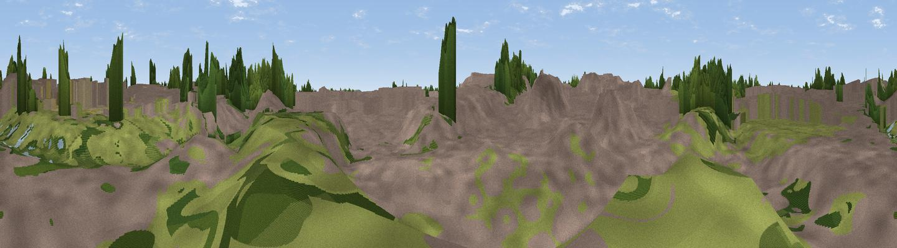

Greenway
#45489 in England · top 77% of its area beats it · near East HamWhere it is
The exact computed spot (TQ 37836 83722). Click the marker for map links.
The view, rendered

A 360° render of this exact spot computed from the terrain model, tree cover and land cover — summer colours, afternoon light, calibrated against photographs of famous viewpoints. Real trees, hedges and buildings will differ in detail.
The panorama
Grey silhouette: terrain skyline in each direction (720 bearings, Earth curvature and refraction included). Dashed green: skyline with trees (+15 m) and buildings (+8 m) as obstacles. Blue strip: how far the ground is visible on each bearing.
Where the view opens
Wedge length = distance to the farthest visible ground on that bearing (vegetation-aware). Rings at 10, 25 and 50 km.
What fills the view
51% built-up · 29% grassland · 17% woodland · 3% cropland ·
Angular shares of the visible panorama (visual magnitude), not map area. Landscape diversity 0.49 (0–1 Shannon).
Key numbers
More beautiful places nearby
The staircase of upgrades: each row has a higher view potential than everything closer. Driving times are estimates from straight-line distance, calibrated against real road routing — check an actual route before setting out.
| Place | Direction | Drive | Score |
|---|---|---|---|
| Olympic Rings | N · 1 km | ~4 min | 15.4 |
| Viewpoint near Greenwich | S · 4 km | ~8 min | 17.6 |
| Beckton Alps | ESE · 6 km | ~12 min | 23.5 |
| Viewpoint near Greenwich | S · 6 km | ~13 min | 24.7 |
| Viewpoint near Greenwich | S · 6 km | ~14 min | 26.6 |
| Moon Hill | N · 9 km | ~17 min | 30.6 |
| Viewpoint near Woolwich | SE · 9 km | ~18 min | 31.9 |
| Viewpoint near Eltham | SSE · 9 km | ~18 min | 34.0 |
51.53558, -0.01406 · source: osm viewpoint · position refined by local search. Computed location — check access rights before visiting.